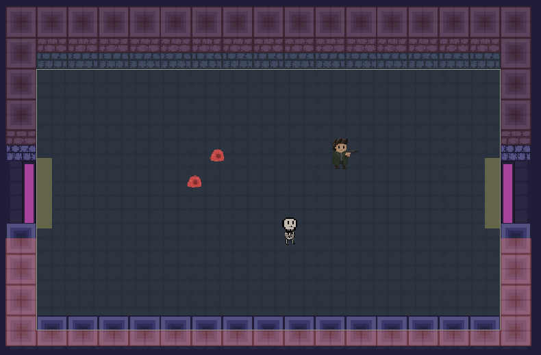
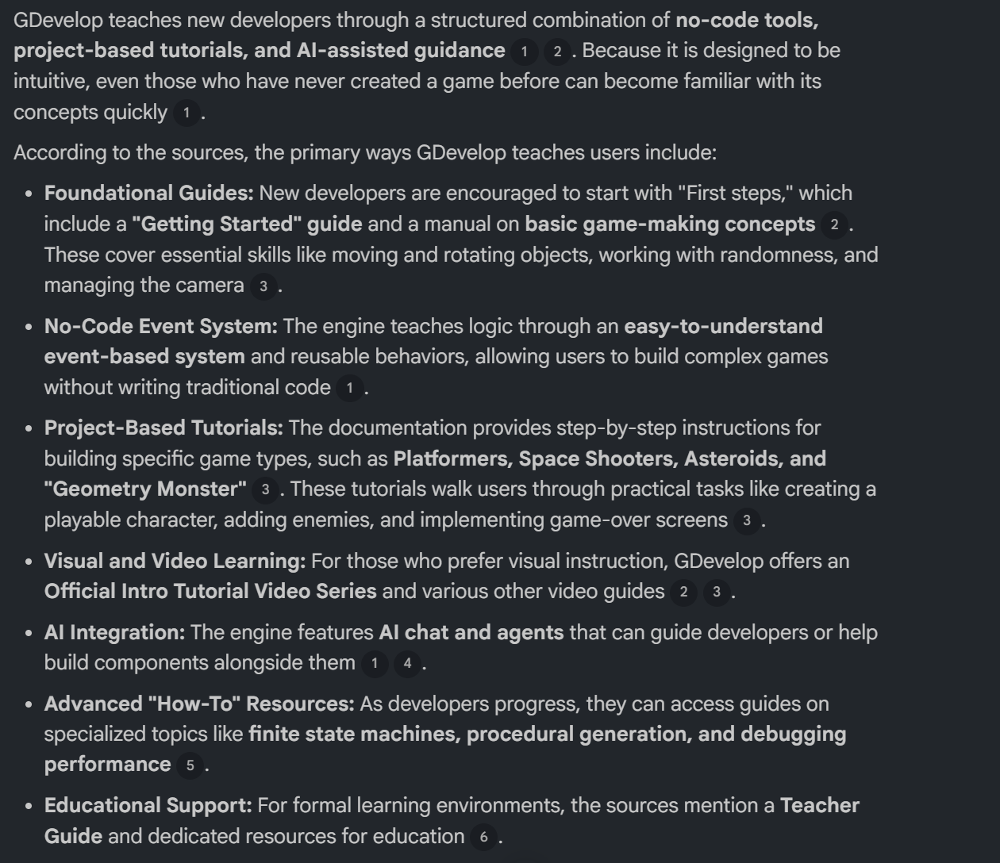
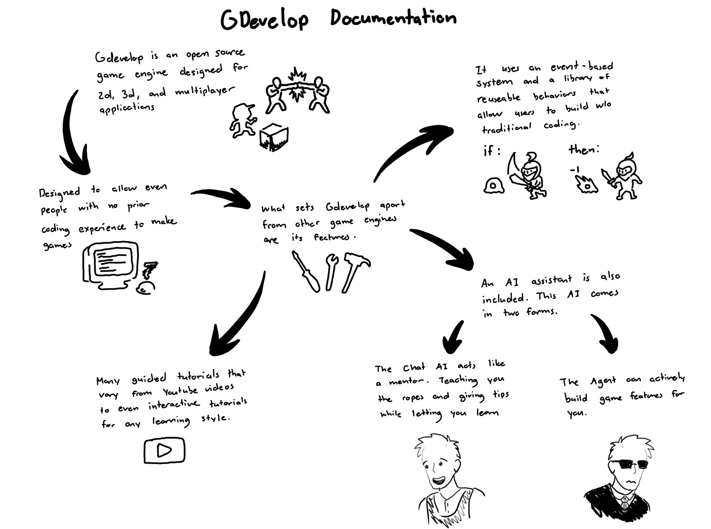
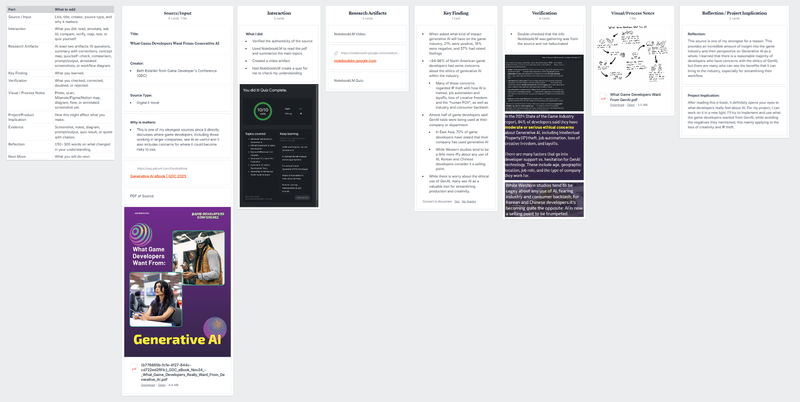
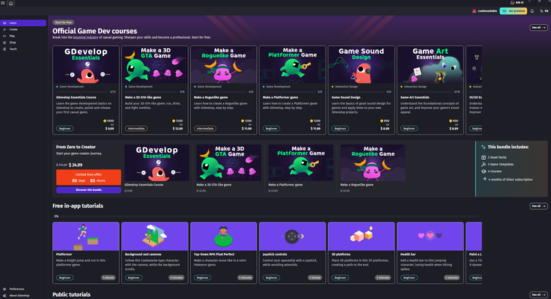
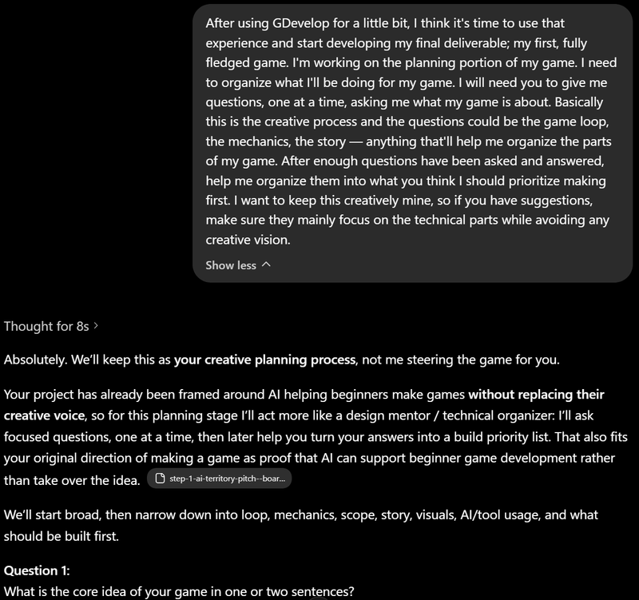
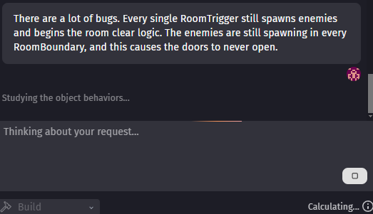
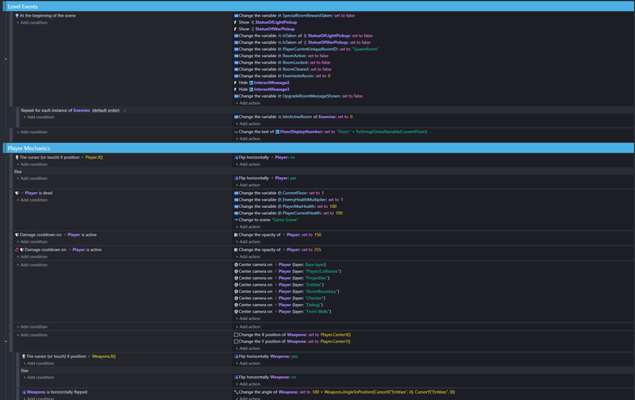

How can AI help beginners develop playable games while still preserving their creative voice?
Floor 00 / Project Start
Developing Games with AI as Player Two
A top-down roguelike dungeon crawler prototype built with AI as a technical assistant to investigate whether beginners can develop playable games while preserving their creative voice.

Quest Brief
Can AI lower the skill barrier without taking over authorship?
Emanuel Moua
AI + Design Studio
Deepest Dungeon (Alpha 0.1), a GDevelop dungeon-crawler / bullet-hell prototype.
Run Summary
The project is both a playable prototype and a process archive.
I began with zero coding or programming experience and used myself as the test subject. The goal was not to let AI make a game for me, but to test whether AI could help me learn enough to build one.
The final site is organized like a dungeon descent: research establishes the rules, process evidence shows the build, the outcome highlights the playable game, and the reflection explains what changed in my thinking.
AI's role
AI helped with planning, technical event logic, debugging, prompting, and organization. The game concept, genre direction, mechanic choices, testing, revisions, and final judgment stayed mine.
Final Deliverables
The finished submission has three connected pieces.
Deepest Dungeon (Alpha 0.1)
The playable GDevelop prototype and product highlight.
Process Evidence / Images
Selected screenshots, videos, prompts, debugging moments, and final event-sheet evidence.
Final Reflection
The public reflection on what AI helped with, where it failed, what I learned, and how creative control stayed with me.
Floor 01 / Research Dashboard
Approach and engagement through sources, verification, and discoveries.
The research looked at how AI is used in game development, where it helps beginners, and where it risks replacing creative authorship. NotebookLM helped process sources, but the project notes emphasize checking claims against the original materials.
Industry Report
GDC: What Game Developers Want From Generative AI
Useful for understanding how the wider game industry views generative AI, including workflow support, ethics, IP concerns, job automation, and creative freedom.
Open source pageIndie Developer Research
Envisioning and Designing Generative AI to Support Indie Game Development
This source shaped the project most because it connected AI support to indie and small-team development, closer to the beginner creator audience.
Open paper PDFTool Documentation
GDevelop Documentation
GDevelop became the main build tool because it is beginner-friendly, no-code, and includes AI chat and agent features for game creation.
Open docsResearch Findings
What the sources changed about the project.
Indie developer research shaped my AI boundaries.
The Panchanadikar and Freeman source showed mixed feelings around generative AI: it can lower barriers, cut costs, streamline work, and act as support, but it also raises concerns around replacement, consistency, copyright, and creative ownership. That changed how I used AI: technical support was allowed, but the game concept, mechanics, art direction, and final decisions stayed mine.
GDevelop made the experiment practical.
The GDevelop documentation showed that the tool is built around a no-code event system, beginner tutorials, reusable behaviors, and built-in AI support. That finding pushed the project away from a hypothetical argument and toward an actual playable prototype built by someone with no prior game-development experience.
Industry concerns shaped the design question.
The GDC source showed that many developers see value in AI for workflow and production, while also worrying about ethics, IP theft, job automation, layoffs, and loss of creative freedom. Those concerns became part of the site's main argument: AI can help beginners, but the creator still has to guide, test, reject, and preserve authorship.
Approach and Engagement Evidence
Research was checked, studied, and turned into build rules.

Verified tool claims
I checked NotebookLM’s GDevelop summary against the source text before using it to justify GDevelop as the build tool.

Studied the source and made visual notes
I used summaries, quizzes, and visual notes to make sure I understood the GDevelop documentation instead of only collecting links.

Mapped findings to implications
The research board connected source input, key findings, verification, visual notes, and project implications.
This page uses selected evidence from the full process archive. The complete archive includes additional screenshots, videos, prompt logs, source notes, and weekly build records.
Floor 02 / Workflow and Iteration
Evidence of prompts, pivots, failures, debugging, and discovery.
The process followed a repeated loop: idea, AI-assisted planning, GDevelop steps, build, test, debug, judge, revise. This section shows the work through actual process artifacts rather than broad claims.
Build Loop
The workflow became a repeatable dungeon route.
My idea
ChatGPT organizes priority
GDevelop gives steps
I build and test
AI helps debug
I decide if it works
Iteration Map
The project moved from tutorial learning to independent debugging.
Beginner learning phase
I started by reading GDevelop's Getting Started materials, downloading the app, completing tutorials, and making a first simple coin-collecting game. This gave me enough tool familiarity to begin the actual prototype.
AI-assisted planning phase
ChatGPT helped organize my game idea into technical priorities: player combat, enemy systems, room clear logic, manual floor structure, floor transition, upgrades, and later randomization.
Debugging and pivot phase
As the game became more complex, AI started missing small but important details. The major discovery was that I had learned enough to guide the AI, reject broken suggestions, and identify root causes myself.

Beginner Learning Evidence
Starting from tutorials
This shows the beginning of the process: learning the tool before attempting the final game prototype.
First Control Test
Character's first steps
A simple character could move with the arrow keys. This was the first proof that a beginner-controlled game object was possible.

Prompt Experiment 1
AI-assisted planning without creative takeover
ChatGPT helped turn the game idea into a technical priority list while the project concept, genre, mechanics, enemies, and creative direction stayed mine.
Core Prototype
Projectile physics test
The player can fire projectiles in the direction they are aiming, creating the start of the combat system.

AI Failure / Debugging
Room trigger logic failed too broadly
GDevelop's AI Agent treated room boundaries too generally. I had to identify that each room needed its own room ID and more specific variables.
Dungeon Loop Evidence
Manual floor and room logic debugging
The connected room layout proves the dungeon structure before random generation, while also showing an important AI limitation moment.
Procedural Generation Evidence
A working random floor generator
The procedural generation loop was the hardest mechanic to implement as of yet. This shows what can be achieved with the assistance of AI: a working random floor generator.
Prompt Log
Three AI interactions that mattered.
1. Planning prompt with ChatGPT
I asked ChatGPT to interview me one question at a time, then organize the answers into build priorities focused on technical order, not creative direction.
Accepted: the technical build order. Rejected: letting AI invent the game's identity.
2. GDevelop AI technical debugging
The AI Agent helped adjust Skeleton Archer logic so the enemy could keep distance and shoot properly, but I still had to test whether the behavior fit the game.
Accepted: the working technical fix. Rejected: instructions that did not match GDevelop's actual options.
3. Entity turning failure
The AI struggled to make enemies turn individually instead of all syncing together. The breakthrough came through repeated testing and clearer prompts.
Accepted: the final separated enemy behavior. Rejected: any solution that kept enemies turning in sync.
Floor 03 / Product and Authorship
Deepest Dungeon (Alpha 0.1) is the playable outcome.
The current prototype is one of the three final deliverables, alongside the process evidence/images and final reflection. It is a top-down dungeon-crawler / bullet-hell built in GDevelop. The player moves with WASD, aims with the mouse, shoots projectiles, clears enemy rooms, chooses upgrades, and descends floors.
Playable Systems
What the prototype currently includes.
Player Combat Prototype
WASD movement, mouse aiming, left-click shooting, and projectiles that deal damage.
Enemy System
A chaser enemy deals contact damage, while a ranged skeleton enemy shoots projectiles at the player.
Dungeon Loop
Combat rooms close, enemies spawn, and doors reopen only after every enemy is defeated.
Floor Transition
The way-down room lets the player choose when to descend, reset the stage, and increase difficulty.
Authorship and Synthesis
The strongest outcome is not only the game, but the proof of learning.
The strongest part of the final outcome is that multiple systems work together: movement, aiming, shooting, enemy behavior, damage, room clearing, upgrades, and floor descent.
My authorship shows through what I selected, tested, reshaped, rejected, and refined. The AI helped with technical systems, but it did not replace my decisions about the game loop, visual behavior, room structure, or player choices.
Design decisions I kept
- Upgrade rooms create tension by asking the player to choose between healing and stronger upgrades.
- Skeleton enemies flip instead of rotating, preserving a 2D pixel-game feel.
- Stairs require player input so the player chooses when to descend.
Accepted / Changed / Rejected
AI shaped the build, but I filtered the result.
What I accepted
I accepted AI help when it made technical systems easier to understand or build, especially planning the build order, setting up event logic, and fixing problems I could not solve alone.
What I changed
I revised AI output through testing. When the game behavior did not match my intended combat or room design, I adjusted prompts, checked the events, and reshaped the solution.
What I rejected
I rejected suggestions that did not exist within the options but were hallucinated by GDevelop, events that broke working systems, or pushed the game away from my creative direction.

1 / 4
Event Sheet 1: Level events and player mechanics
Final Product Evidence
The event sheet became the proof of learning.
Use the image scroller to flip through final event pages. These screenshots show how much the project grew: movement, combat, room logic, upgrades, interactions, and floor systems are all managed through GDevelop conditions and actions.
Floor 04 / Reflection and Learning
What changed after building a game with AI as a technical assistant.
What changed
Having finished making the first real playable iteration of my game, there is much to reflect upon. My goal was to find out if AI could help a beginner build a game from nothing, all while preserving the developer's creative vision. Having started with no game building experience, I decided to use myself as the test subject. During the last five weeks, I got familiar with GDevelop and worked on Deepest Dungeon, a roguelike dungeon-crawler where the main goal is to go as far down as possible.
In the beginning, I was skeptical. I was not sure whether AI was truly practical, but over time those doubts became more specific. I learned how indie developers and larger studios use AI to streamline tedious parts of game building, such as debugging and prototyping, while also recognizing concerns around ethics, legal risk, and creative freedom.
Where AI helped
While working alongside GDevelop AI Chat and Agent, I found that AI was strongest when teaching the ropes and helping plan technical event logic. It did not simply build everything instantly; it often explained what each component should do before I confirmed the process. That helped in the early phases where the mechanics were more common and easier for the AI to reason about.
Where AI failed
Once the game became more complicated, the AI started to fail more often. Bugs piled up, some suggested fixes did not match the real GDevelop options, and the agent sometimes missed small details that mattered. Those failures became important because they showed me that I was actually learning. I began guiding the AI, spotting issues myself, and building more complex event sequences without relying on it as much.
What comes next
In the end, I learned that AI is powerful when it is used properly, but it needs a human creator who can guide it, test it, question it, and decide what belongs in the final work. AI helped me build my first game from scratch, but it did not erase the need for creative control. If I continued this project, I would polish the art, expand enemy and room variety, refine upgrades, and keep improving the dungeon loop.